Benchmarks & TA-nmon foot print¶
What does cost the TA-nmon?¶
Before deploying the TA-nmon on your systems, you will want to know accurately what will be its costs in term of CPU, memory, and disk I/O.
Since the release 1.3.x of the TA-nmon, we have worked real hard to reduce it at the most, and good news, we got it minimal now!
Splunk Universal Forwarder¶
The TA-nmon needs off course the Splunk Universal Forwarder (or Splunk Enterprise!) to operate on top of it.
The Splunk Universal Forwarder is highly optimised to have the lowest level of costs in CPU and memory, on its own the Splunk Universal Forwarder has a very negligible foot print.
Please consult the official Splunk Universal Forwarder documentation: http://docs.splunk.com/Documentation/Forwarder/latest/Forwarder/Abouttheuniversalforwarder
nmon binaries¶
Depending on the operating system, the TA-nmon will start the nmon binary when required. (topas-nmon for AIX, nmon for Linux, sarmon for Solaris)
On its own, the resources foot print of the nmon binary is really very low, almost not detectable, its foot print is negligible.
TA-nmon¶
The TA-nmon does various processing tasks on the data being generated by nmon, this is where there are some risks of a CPU, memory and I/O foot print.
To avoid these risks, and limit at the maximum the amount of resources to be used, we implement fifo files, which allow controlling a constant volume of data to be proceeded.
Thanks to this implementation, the TA-nmon foot print is now very low and constant, the following analysis will factually demonstrate real costs of the TA-nmon processing:
Analysis scenario:¶
To analyse the costs, we will use a small Linux server (1 CPU, 2 GB RAM) and compare different situation in details:
- run a Splunk Universal Forwarder instance (with connection to a deployment server) + the TA-nmon
- run a Splunk Universal Forwarder instance (with connection to a deployment server) + an independent nmon process to collect performance statistics
- run a Splunk Universal Forwarder instance (without connection to a deployment server) + an independent nmon process to collect performance statistics
- nothing running else but the independent nmon process to collect performance statistics
Notes:
- analysing the system load with and without connection to a Splunk deployment server (DS) will be useful to isolate the cost of “calling home” from the UF to the DS
Finally, after having a run of 2 hours minimum for each scenario, we ingest the external nmon file (for non TA-nmon scenarios) and perform the analysis and comparison.
CPU usage comparison:
Average CPU % usage over periods for each scenario:
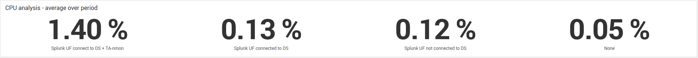 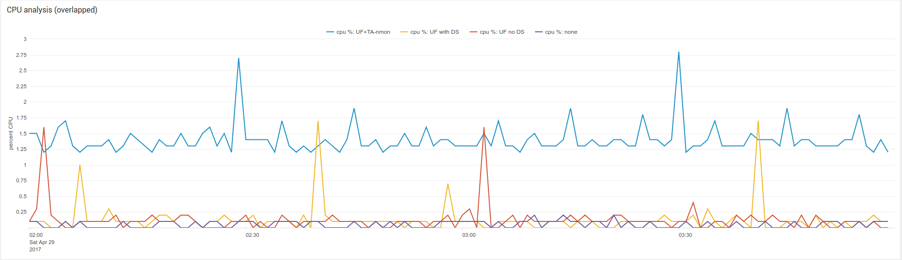 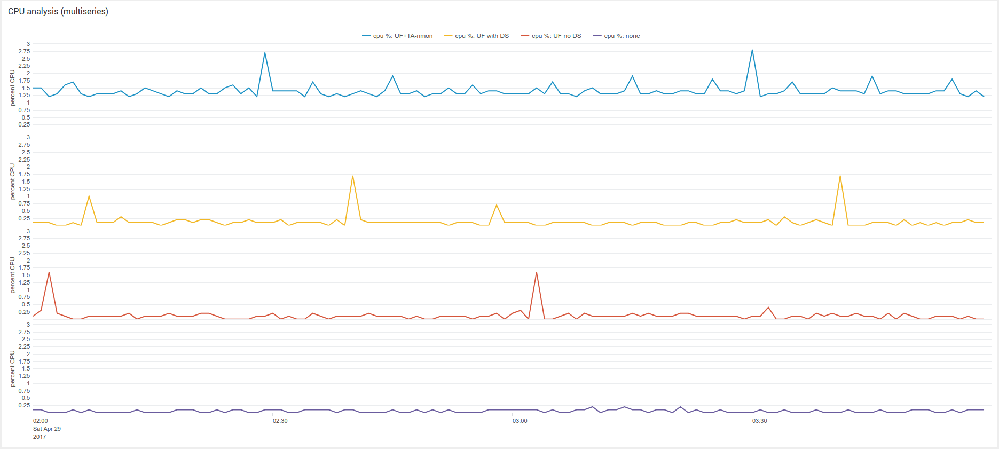Observations:
- the average cost of running the Splunk Universal Forwarder (doing nothing) is similar with or without a connection to a deployment server
- the average CPU cost is approximately 0.10 % of global CPU usage on this server (usage-usage without UF)
- the imputable average CPU cost of running UF + TA-nmon is approximately 1.35% (TA-nmon processing costs, Splunk UF ingestion costs)
- the average CPU usage of system + UF + TA-nmon is approximately 1.40%
- We can observe an hourly task consuming CPU and imputable to the Splunk Universal Forwarder only (peaks exist without the TA-nmon, but only when running the UF)
- due to this hourly task of the Splunk Universal Forwarder (quick CPU peaks up to 1.7% without DS, up to 1.6% with DS connection), we can observe quick CPU peaks with UF + TA-nmon up to 2.8% CPU
Average physical memory % usage over periods for each scenario:
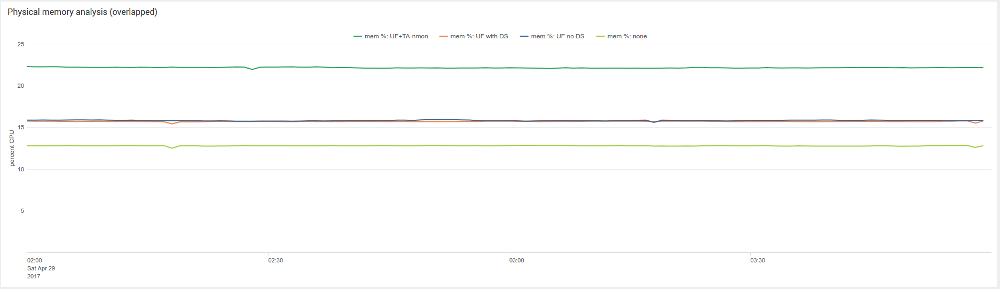Observations:
- there is a small memory footprint of running the Splunk Universal Forwarder (approximately 3.20% of physical memory)
- this is not necessary what will proportionally cost on any system running a UF, this statistic has to be considered in the context of this configuration
- as well, we can observe a supplementary approximately 6% of memory costs running the UF + TA-nmon (TA-nmon processing costs, Splunk UF ingestion costs)
- caution: these memory utilisation statistics are what the system really uses, not necessary what the Splunk Universal Forwarder or the TA-nmon will use
Average I/O per second (IOPS) over periods for each scenario:
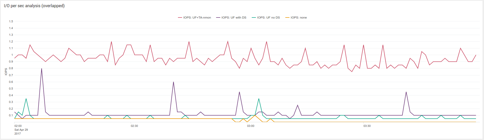Observations:
- the level of IOPS imputable to the activity of the Universal Forwarder (when doing nothing) is obviously almost null
- when running the UF + TA-nmon, the level of IOPS is approximately 1 I/O per second.
splunkd process (TOP data):
Notes:
For this exercise, we use the nmon binary in unlimited processes capture mode (option -I -1), this mode allows capturing the full processes table even such that capture low consuming processes.
See: Linux OS specific options
splunkd CPU logical core usage:
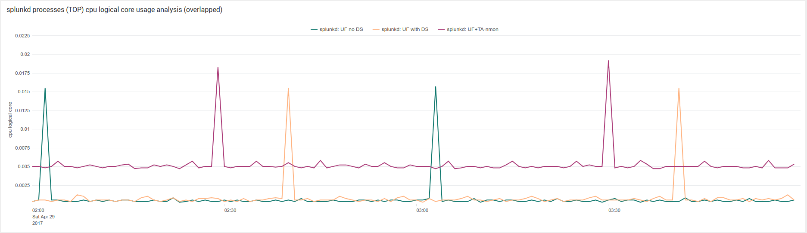 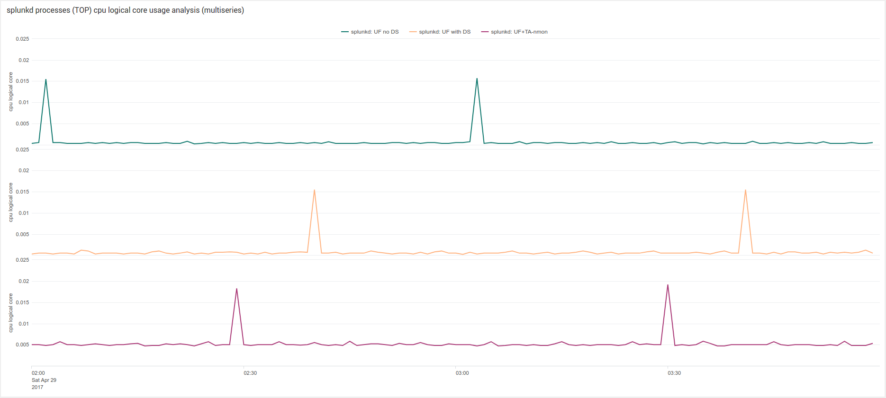splunkd memory usage:
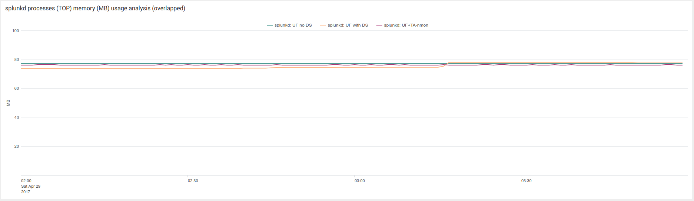Observations:
- we can clearly observe the hourly peak of CPU due to the Splunk Universal Forwarder
- CPU utilisation with or without deployment server connection is almost identical, the cost of calling home to the DS is almost null
Conclusions:
- the TA-nmon usage is stable and constant over time
- due to this internal Splunk Universal Forwarder hourly task, we can observe small hourly peaks of CPU usage
- running the Splunk Universal Forwarder + the TA-nmon generates approximately 1.35% of CPU usage on this machine
- the Splunk Universal Forwarder itself but doing nothing has obviously a very limited CPU foot print (but this mysterious hourly task!)
- the fifo implementation introduced in the TA-nmon 1.3.x allows now a very limited and constant system foo print!
The dashboard xml code used for this analysis is available in the Git docs directory, it has hardcoded host and time ranges but can be useful if you want to do your own analysis:
Enjoy!
IBM AIX BENCHMARKS:¶
IBM AIX 6.1 ON POWER8 / Entitled 0.2 / VirtualCPUs 1:
date 27/03/2013, TA-nmon release 1.3.05, Splunk Universal Forwarder 6.5.2, Perl interpreter
lpar usage over 24 hours:
lpar usage_zoom over 24 hours:
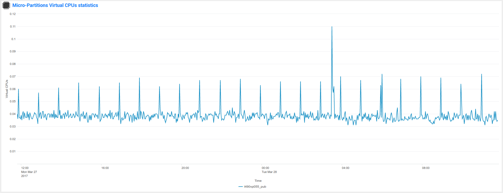Average I/O over 24 hours:

TOP processes CPU core usage over 24 hours:
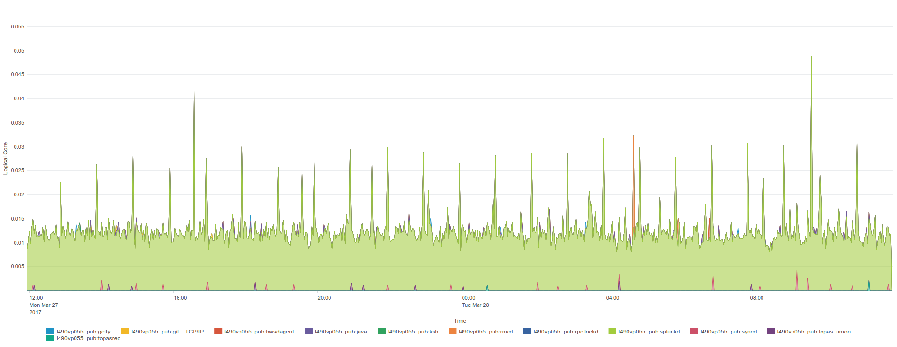TOP processes memory usage over 24 hours:

IBM AIX 7.1 ON POWER8 / Entitled 0.2 / VirtualCPUs 1:
date 27/03/2013, TA-nmon release 1.3.05, Splunk Universal Forwarder 6.5.2, Perl interpreter
lpar usage over 24 hours:
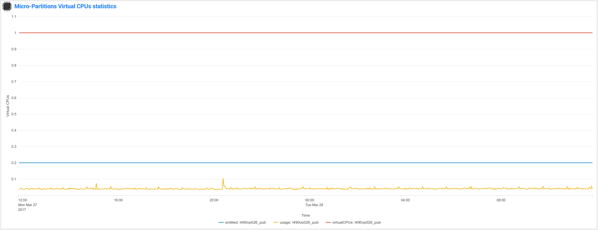lpar usage_zoom over 24 hours:
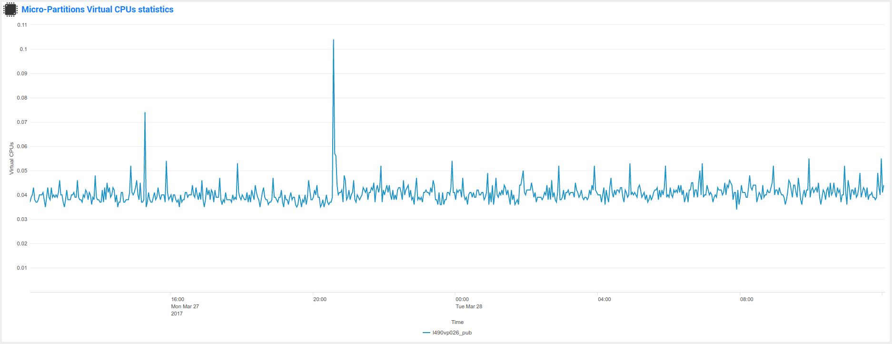Average I/O over 24 hours:

TOP processes CPU core usage over 24 hours:
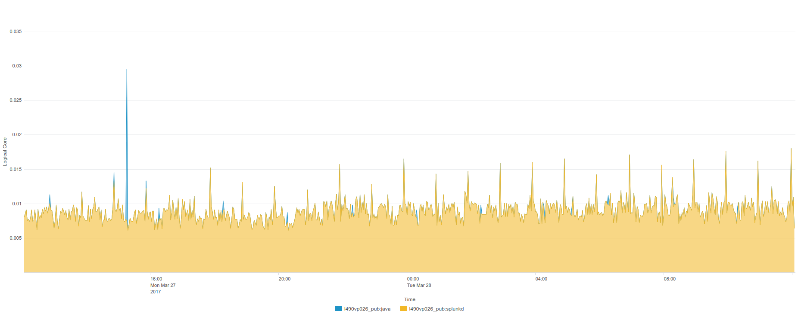TOP processes memory usage over 24 hours:
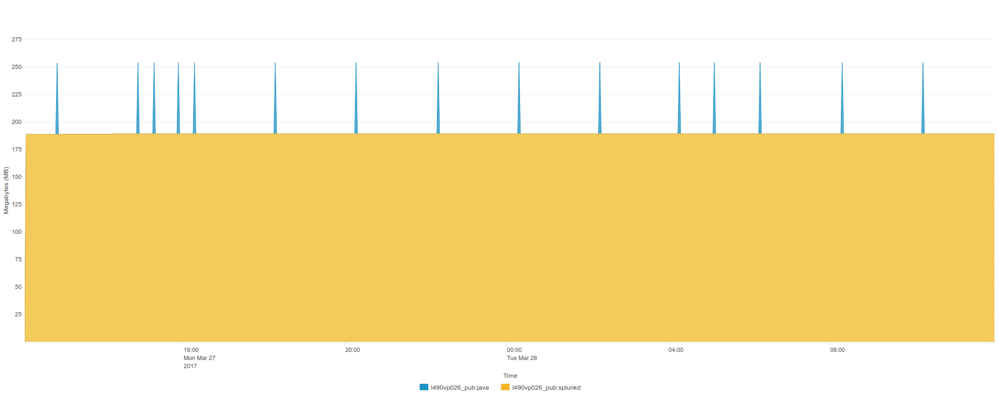IBM AIX 7.2 ON POWER8 / Entitled 0.2 / VirtualCPUs 1:
date 27/03/2013, TA-nmon release 1.3.05, Splunk Universal Forwarder 6.5.2
lpar usage over 24 hours:
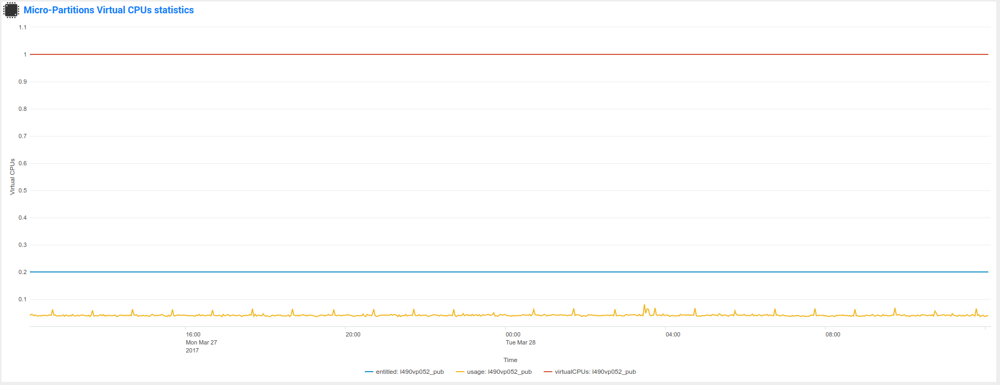lpar usage_zoom over 24 hours:
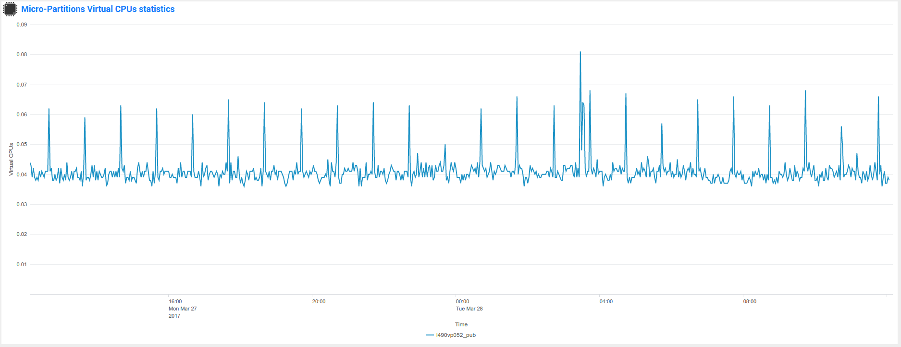Average I/O over 24 hours:
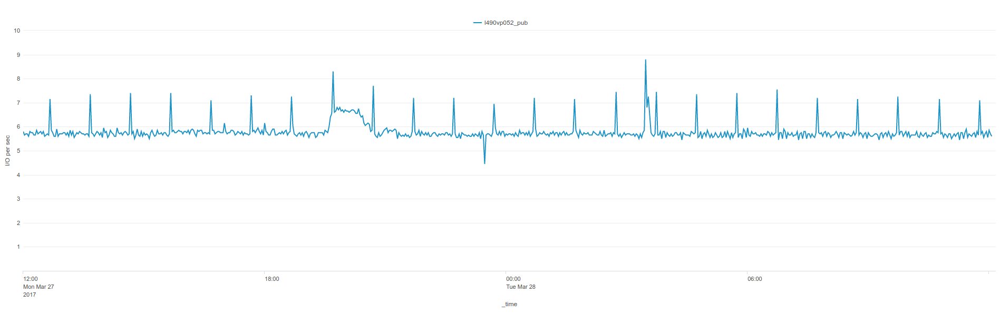TOP processes CPU core usage over 24 hours:
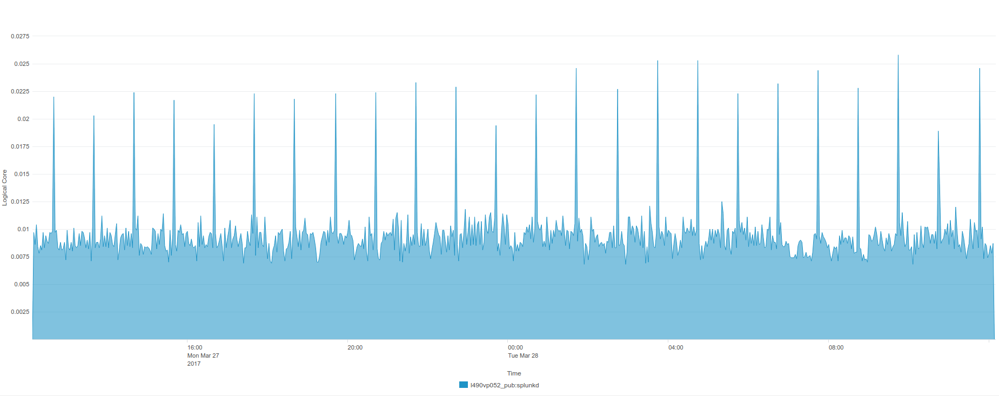TOP processes memory usage over 24 hours:

LINUX BENCHMARKS:¶
SUSE Linux 11.4 BE (IBM POWER 8)
date 27/03/2013, TA-nmon release 1.3.05, Splunk Universal Forwarder 6.5.2, Perl interpreter, 1 CPU
CPU percentage usage over 24 hours:
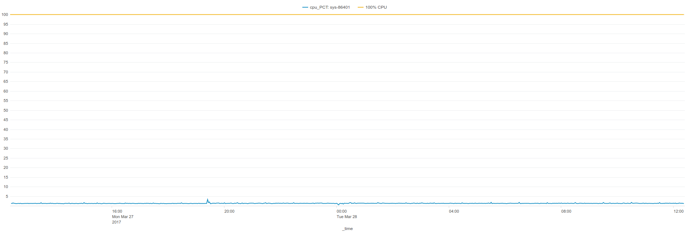
Average I/O over 24 hours:
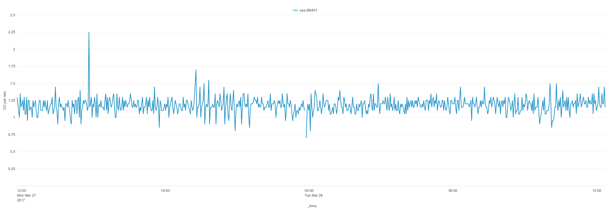TOP processes CPU core usage over 24 hours:
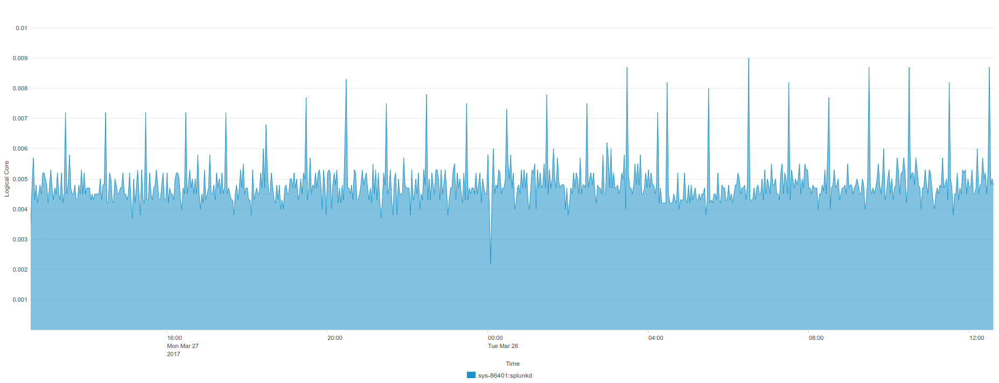TOP processes memory usage over 24 hours:

SUSE Linux 12.2 LE (IBM POWER 8)
date 27/03/2013, TA-nmon release 1.3.05, Splunk Universal Forwarder 6.5.2, Python interpreter, 1 CPU
CPU percentage usage over 24 hours:
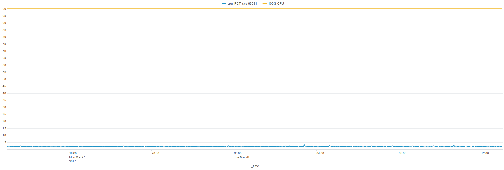
Average I/O over 24 hours:
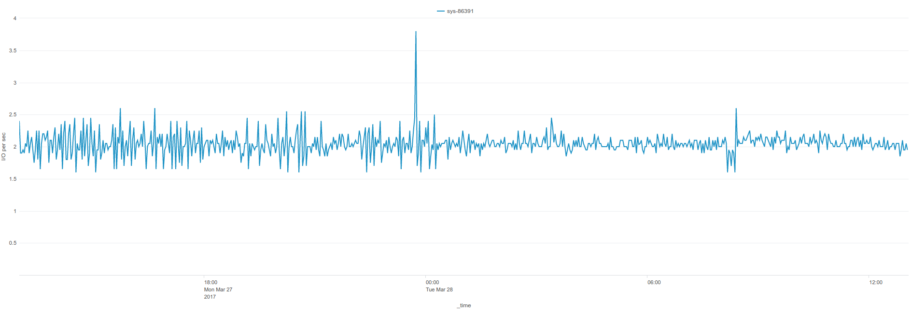TOP processes CPU core usage over 24 hours:

TOP processes memory usage over 24 hours:
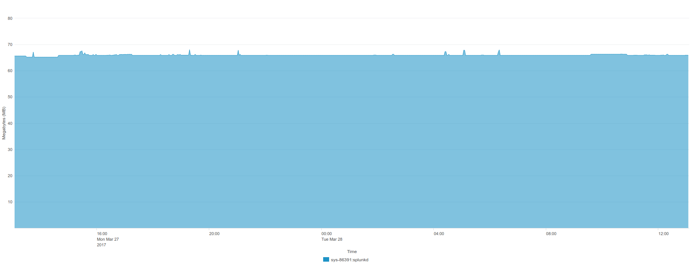Red Hat Linux 6.9 BE (IBM POWER 8)
date 27/03/2013, TA-nmon release 1.3.05, Splunk Universal Forwarder 6.5.2, Perl interpreter, 1 CPU
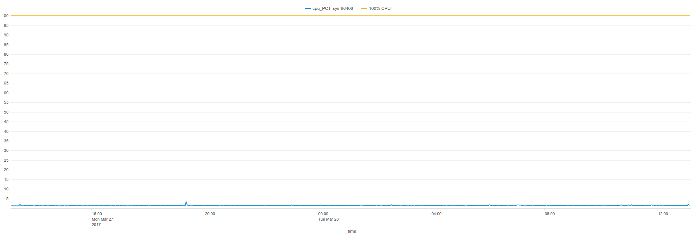 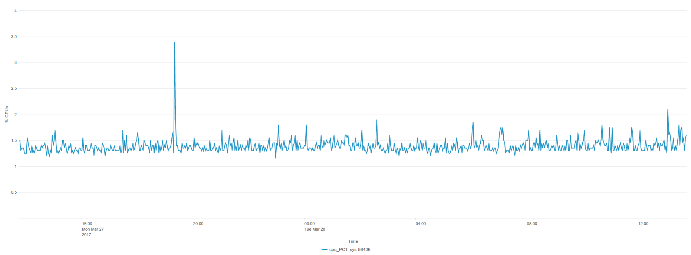Average I/O over 24 hours:
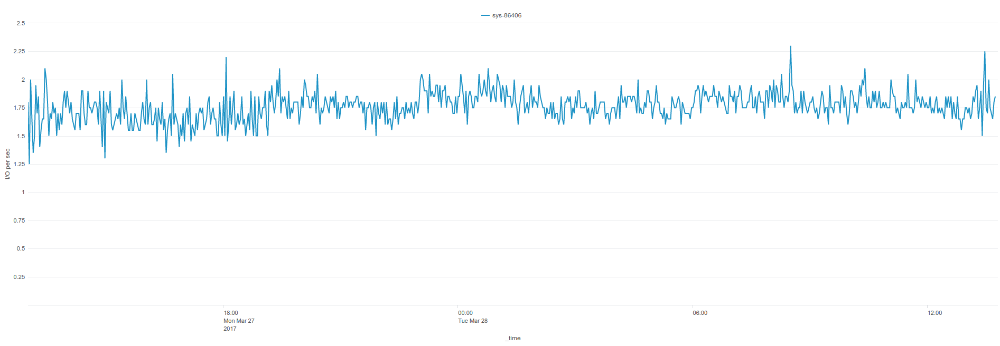TOP processes CPU core usage over 24 hours:
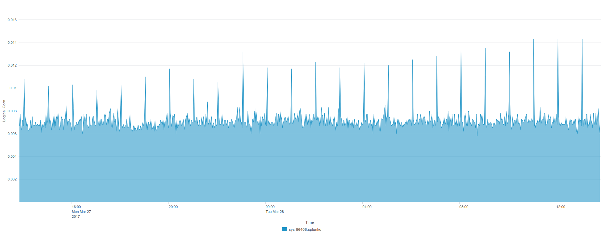TOP processes memory usage over 24 hours:
RedHat Linux 7.2 LE (IBM POWER 8)
date 29/04/2013, TA-nmon release 1.3.15, Splunk Universal Forwarder 6.5.3, Python interpreter, 1 CPU


Average I/O over 24 hours:
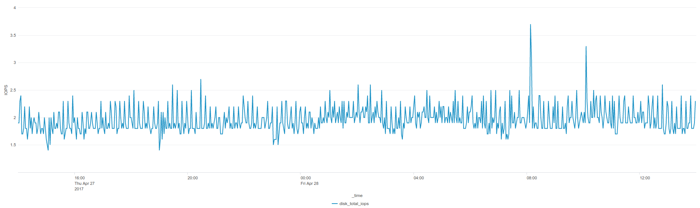TOP processes CPU core usage over 24 hours:
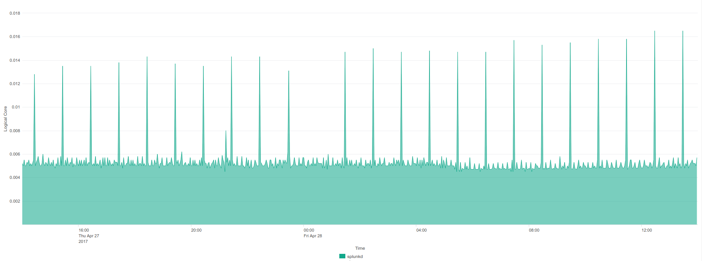TOP processes memory usage over 24 hours:

RedHat Linux 7.3 LE (IBM POWER 8)
date 27/03/2013, TA-nmon release 1.3.05, Splunk Universal Forwarder 6.5.2, Python interpreter, 1 CPU


Average I/O over 24 hours:
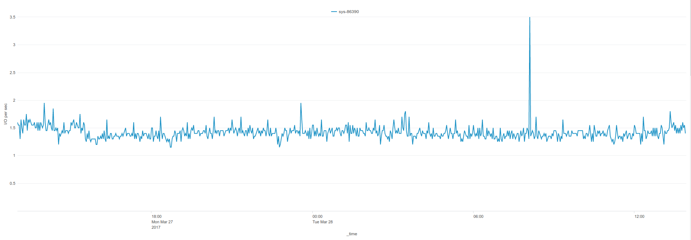TOP processes CPU core usage over 24 hours:
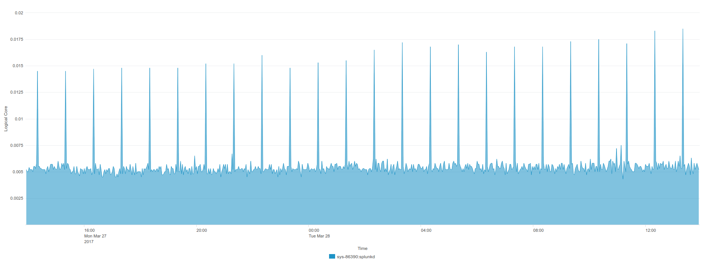TOP processes memory usage over 24 hours:
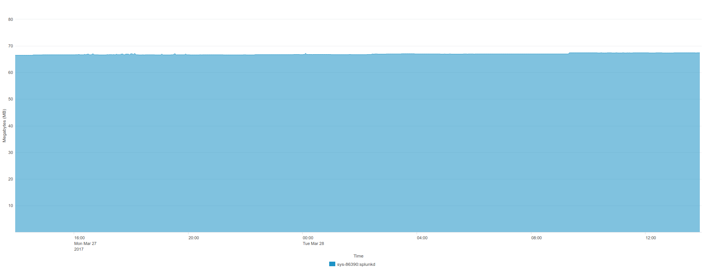Ubuntu 16.04 LTS (IBM POWER 8)
date 27/03/2013, TA-nmon release 1.3.05, Splunk Universal Forwarder 6.5.2, Python interpreter, 1 CPU
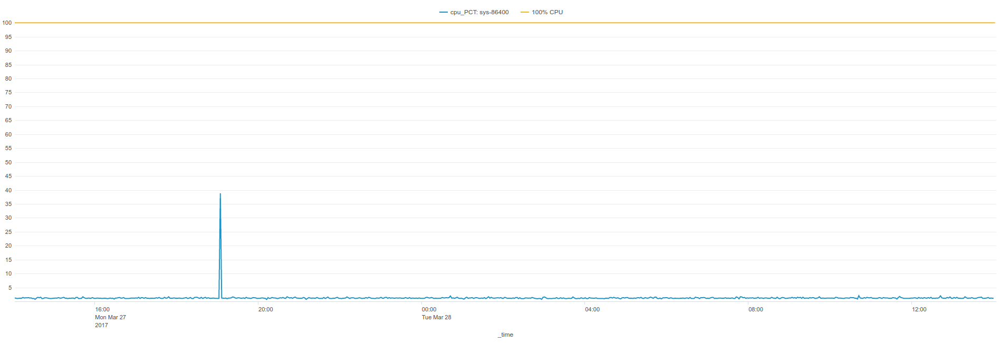
Average I/O over 24 hours:

TOP processes CPU core usage over 24 hours:

TOP processes memory usage over 24 hours: